-
1. Select existing Contenful space.
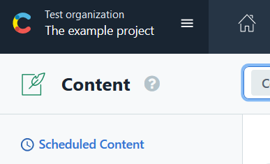
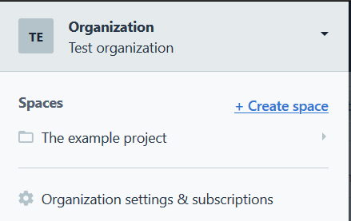
-
2. Go to Apps and select Manage Apps
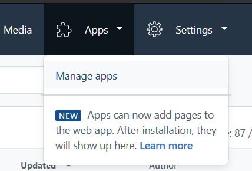
-
3. Click Manage private apps
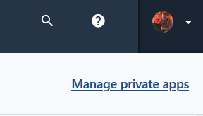
-
4. Click Create app button
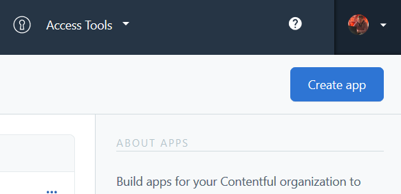
-
5. Enter app name (can be anything). Put URL for Qencode application https://contentful.qencode.com/. Check following
locations: App configuration screen, Entry field, Entry sidebar. Check JSON object in Entry field. Click Create button.
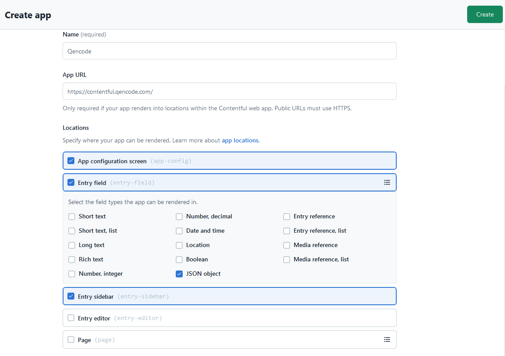
-
6. Click Actions and select Install to space
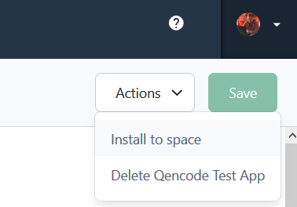
Select the space where you want to install the app
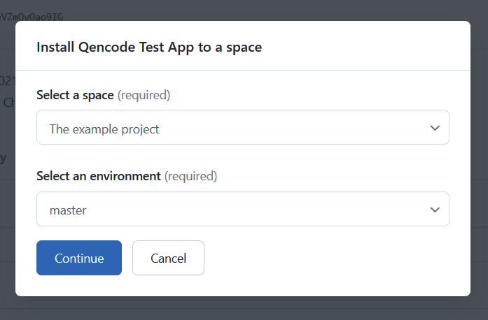
-
7. Now you are taken to Qencode app configuration screen, where you need to provide valid Qencode API key.
Enter API key and press Validate button.
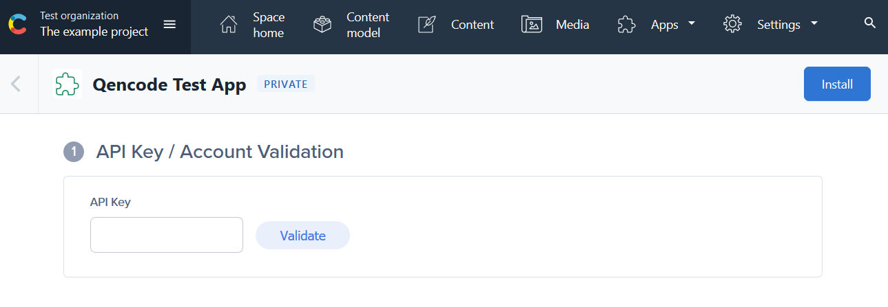
-
8. Enable templates that you will be using for transcoding and click Install button. New content model Video will be created.
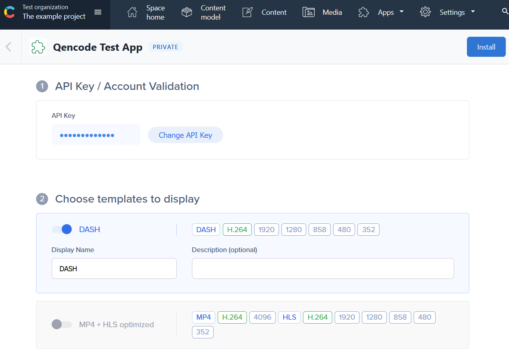
-
9. Find new content model Video in Content model tab and click Video content type to update it.
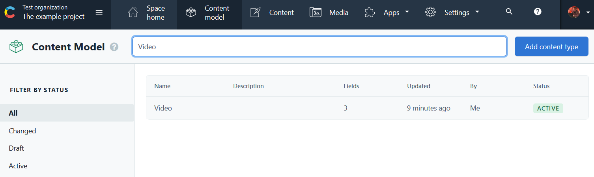
Select Fields tab and click Settings for JSON object field
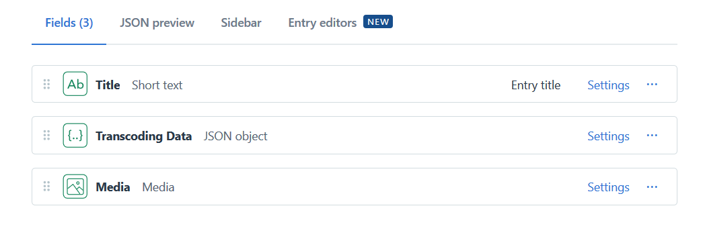
Select Appearence tab and choose installed Qencode app, click Save button.
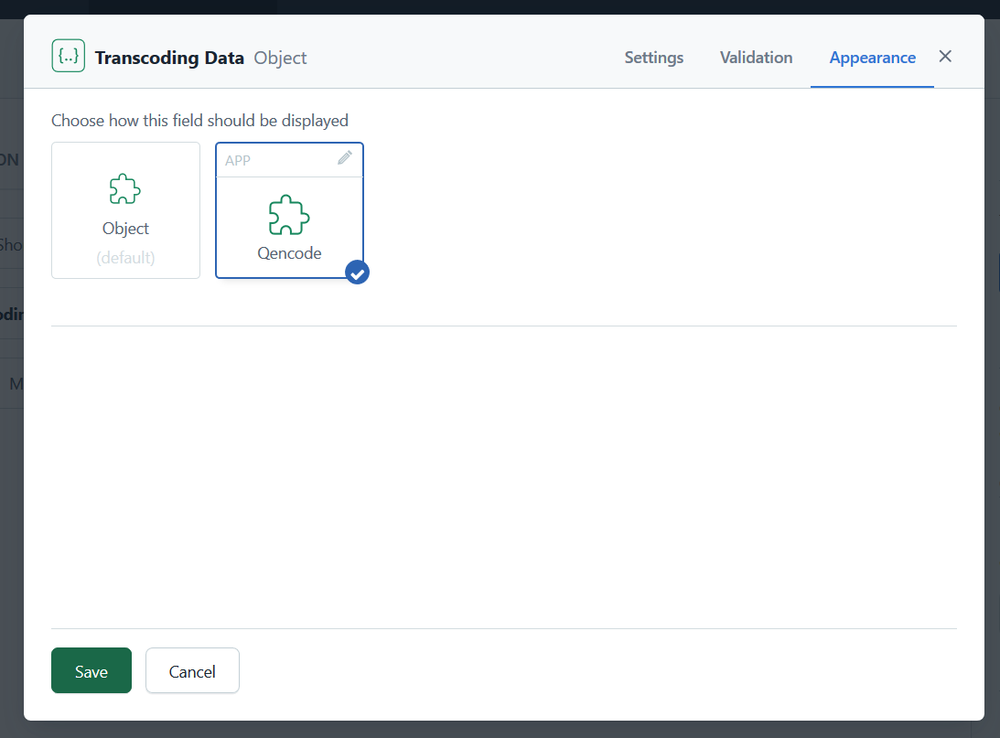
Select Sidebar tab
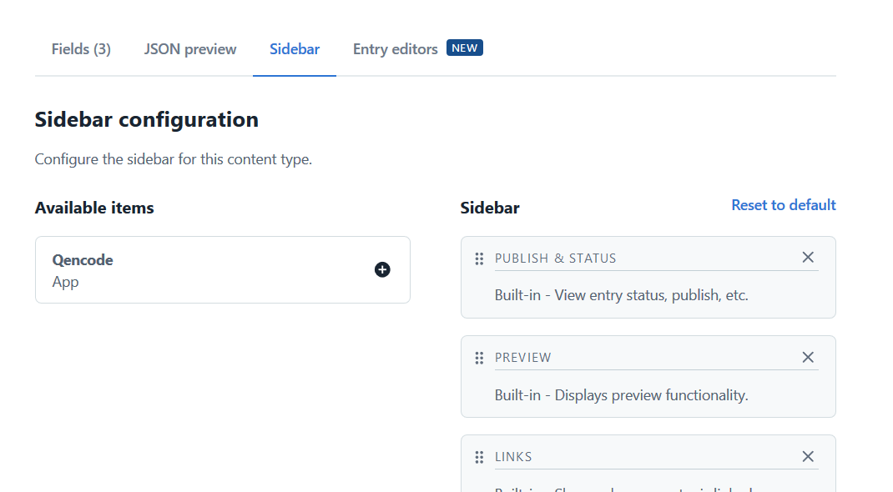
Add available item from installed app to Sidebar by clikling plus. And click Save button to save
changes made to Video content type created by Qencode app during installation proccess.
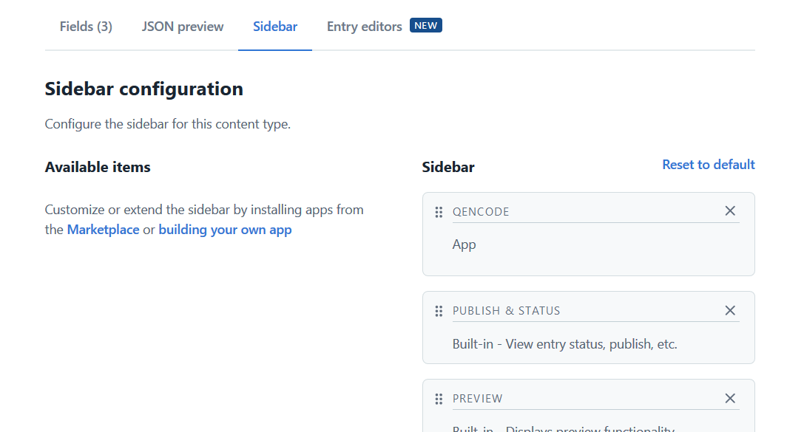
-
10. To create content of Video content type select Content tab, click Entry,
find Video in dropdown and click it.
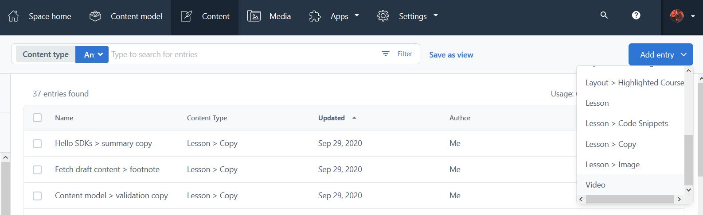
Add media
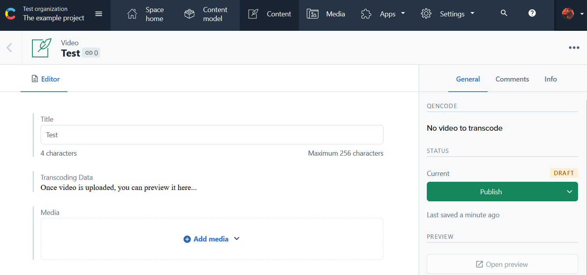
After media is added, click Publish button, transcoding will start automatically.
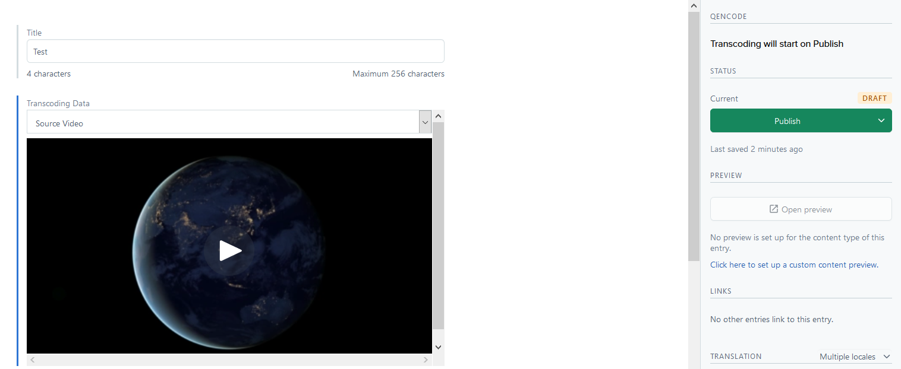
You can leave the page and check the status of transcoding jobs later.
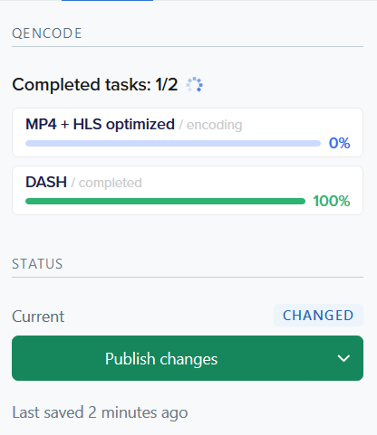
Status of transcoding jobs progress is saved in JSON Object field with id task_data of Video content
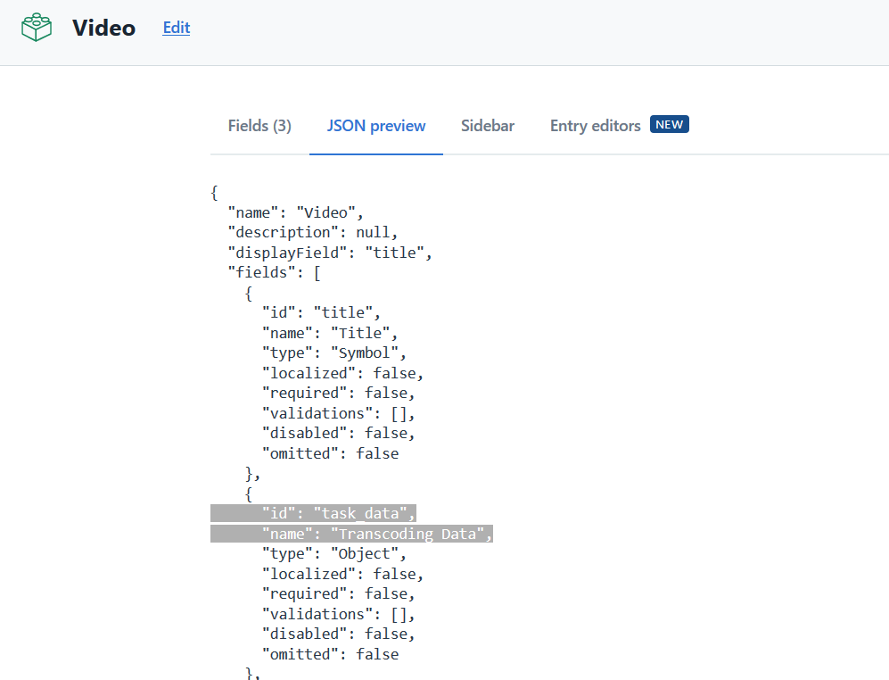